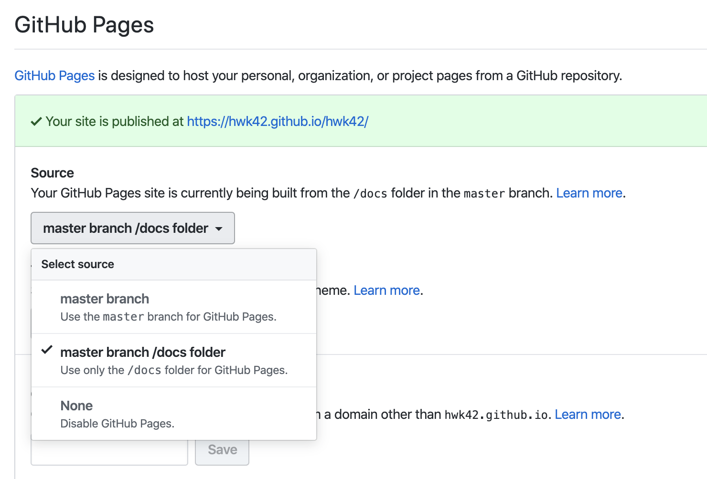

使用Hugo在GitHub Pages搭建个人博客

一直想找个地方记录自己的学习过程，既方便日后回顾，也能通过写博客梳理知识的逻辑。原本打算在CSDN这样的平台上写的，活跃度也高，但被注册过程恶心到了，不止要手机认证，还要关注公众号发验证码。谷歌了一圈，大概有Hexo和Hugo两种方案，前者比较成熟，不过是基于npm的，性能比基于go的hugo要慢，而hugo上手也简单。考虑到GitHub的强大和网站维护性(其实是没钱买服务器)，GitHub Pages成了托管网站的首选。
安装并初始化站点
这里使用Mac的Homebrew安装，其他安装方式可参看官网
brew install hugo
hugo new site hwk42
该命令生成如下的目录：
- archetypes 新文章默认模板
- content 存放所有Markdown格式的文章
- layouts 存放自定义的view，可为空
- static 存放图像、CNAME、CSS、JS等资源，发布后该目录下所有资源将处于网页根目录
- themes 存放下载的主题
- config.toml Hugo配置文档
添加主题
在官方主题选自己喜欢的主题，这里使用maupassant
cd hwk42
git clone https://github.com/rujews/maupassant-hugo themes/maupassant
echo 'theme = "maupassant"' >> config.toml
在网站写点东西
hugo new post/my-first-post.md
这里post是content下的文章目录，改成对应的即可
本地预览
hugo server -D
编译成功后可在浏览器访问 http://localhost:1313/，预览没问题可使用hugo命令生成静态文件，用于后续部署
自定义配置
config.toml是站点页面控制的主要入口，包括一些通用的和主题有关的配置项。下面是部分常见的配置项，可参照改为自己的
baseURL = "https://hwk42.github.io/hwk42/" #网站地址
languageCode = "zh-Hans"
title = "Walker的博客"
theme = "maupassant"
summaryLength = 140
paginate = 10 # 每页的文章数
发布并托管到Github
在github中创建一个以用户名为名的repo，注意不要添加如README，.gitignore等文档，即网站的repo地址为：https://github.com/hwk42/hwk42.git
在网站的根目录下初始化并push静态网站资源：
git init
git add .
git commit -m "first commit"
git remote add origin https://github.com/hwk42/hwk42.git
git push -u origin master
参见官方文档，有两种方式可以托管网站
- 配置Hugo将网页生成在名为/docs的子目录中，然后直接push到master branch
- 仍然使用默认的/public子目录存储网页，再单独建立一个gh-pages branch
使用/docs发布到master branch
首先在config.toml文件增加配置
publishDir = "docs"
该配置在使用hugo命令时将编译的静态文件输出到docs目录(默认输出到public);
在repo上Settings配置GitHub Pages目录为docs，如图：

配置个人域名
对于人民币玩家，可购买自定义域名，个人暂无此需求，就不展开了
配置搜索引擎
为了让搜索引擎抓取博客的内容以便其他人平时能搜索到，需要告诉搜索引擎网站的信息。以Google为例，进入Google Search Console，
有几种方式可以验证网站，建议使用文件验证，把文件放到根目录docs下，提交域名即可。header的方式重新编译时可能会丢失。
Tips
- 网站使用根路径 如果不希望有子路径，仓库名创建为
用户名.github.io，这样网站地址为https://hwk42.github.io - 关于本地图片的引用 网络上大多教程都提到直接在
static目录下放置文章所需图片，这种方法在本地预览时无法正常显示，可能是hugo不能正常识别Markdown的路径。为了更方便管理文章和图片，可以在post目录下新建一个以为文章名命名的文件夹，同时将文章和所用到的图片资源放在该目录下，文章内容写在index.md里，引用文件时直接索引当前目录即可，如 - 自定义图片大小 新建layout文件至
layouts/shortcodes/image-resize.html，贴上以下内容：
{{ $original := .Page.Resources.GetMatch (.Get 0) }}
{{ $options := .Get 1 }}
{{ .Scratch.Set "image" ($original.Fit $options) }}
{{ $image := .Scratch.Get "image" }}
{{ $title := .Get 2 }}
<img src="{{ $image.RelPermalink }}" width="{{ $image.Width }}" height="{{ $image.Height }}" alt="{{ $title }}">
md文件引用时使用{{< image-resize $image “500x500” >}}格式即可